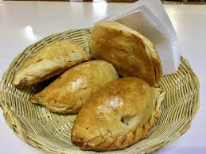

14.Hidalgo

- Platillo: Pastes
- Ingredientes: Masa de harina, papa, carne molida, cebolla, chile, pasas.
- Historia: Introducidos por mineros ingleses en el siglo XIX, adaptados al paladar mexicano.
- Dato curioso: Aunque tienen origen británico, los pastes ya son símbolo de Real del Monte.